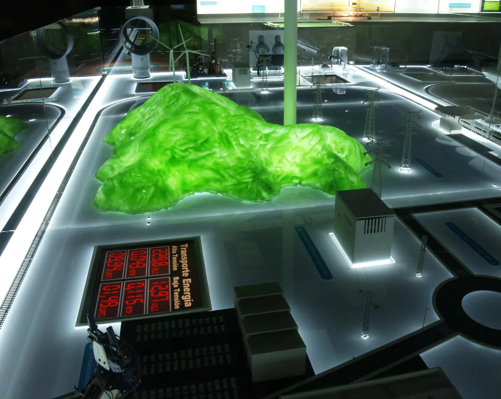
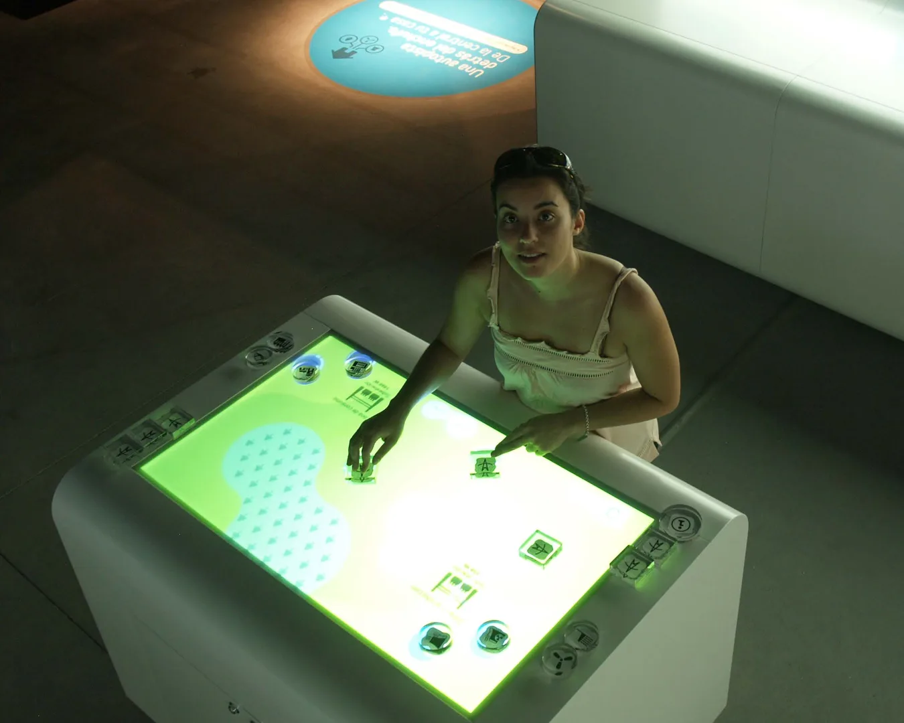

Cultura y museografía
Una autopista detrás del enchufe
Red Eléctrica de España · Exposición itinerante
Responsabilidad. Dirección de empresa

01
Contexto
Una exposición para explicar cómo funciona el transporte de electricidad.
02
Necesidad
Hacer comprensible un sistema técnico y relacionarlo con acciones de la vida cotidiana.
03
Estrategia
El proyecto articuló contenidos, diseño espacial e interactivos e incluyó producción, montaje y logística de las itinerancias.
04
Impacto
La exposición viajó por distintas sedes con experiencias que explicaban el funcionamiento del sistema eléctrico y su relación con el uso cotidiano de la energía.


Créditos y alcance
Promotor: Red Eléctrica de España. Diseño y realización: Optimus Medina Relay. Soporte técnico de Reactable en el módulo correspondiente.
¿Qué tienes entre manos?
Podemos empezar por una necesidad concreta o por una idea que aún necesita forma.